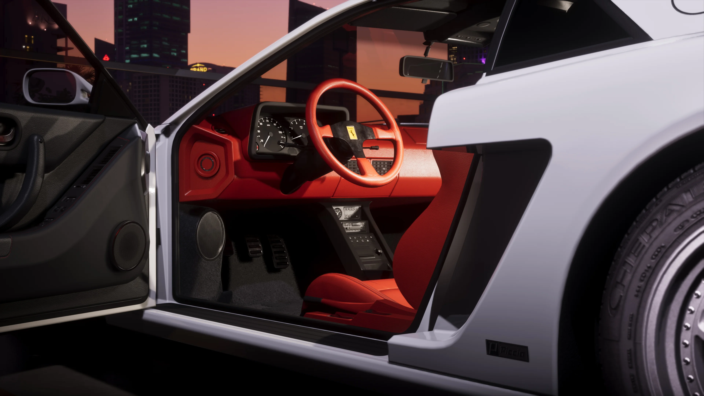
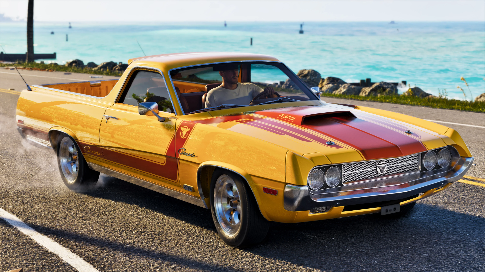
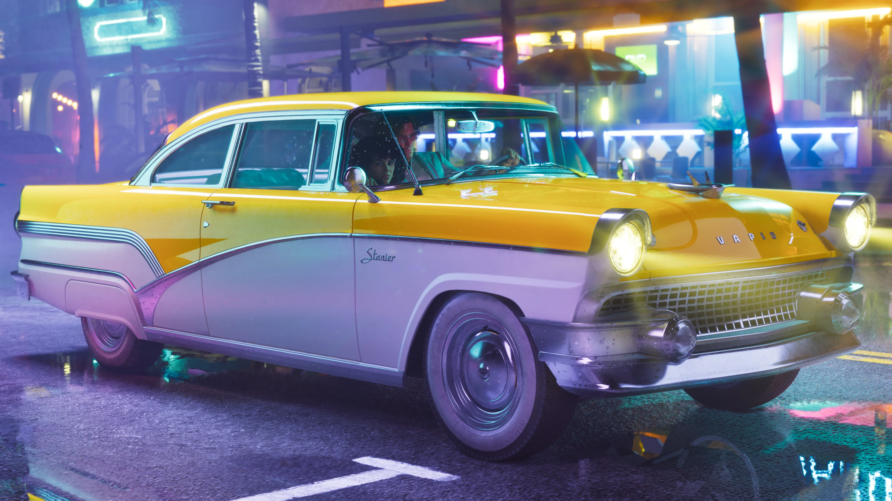
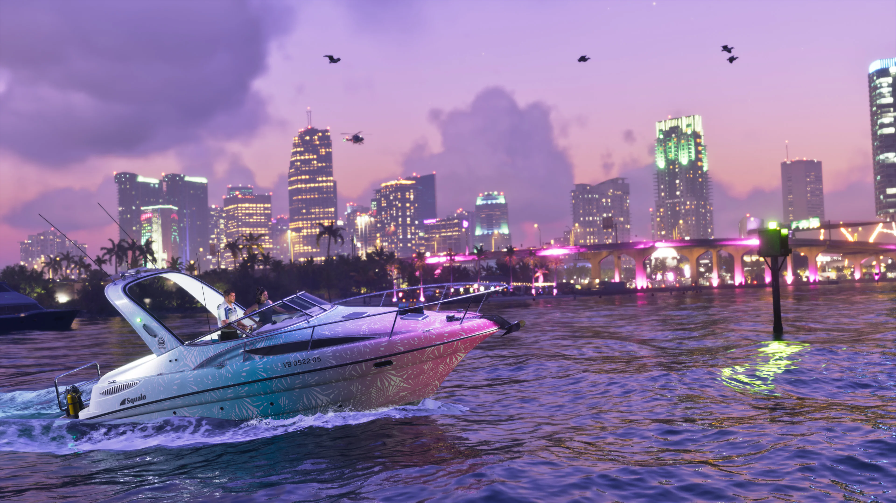
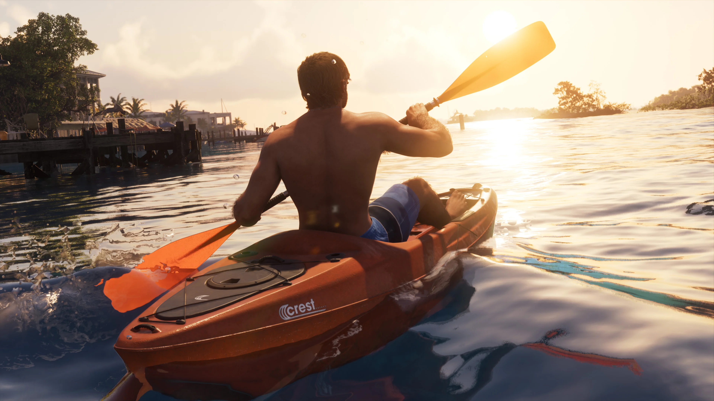

Veículos de GTA VI
Conheça os veículos de Grand Theft Auto VI que já conseguimos catalogar, de esportivos e sedãs a motos, embarcações e modelos preparados para sair do asfalto.
O catálogo é organizado por categoria e cada modelo já catalogado possui uma ficha própria. Antes do lançamento, usamos nomes e imagens que podem ser verificados em materiais oficiais. Depois que GTA VI estiver disponível, essas fichas poderão crescer com dados observados diretamente no jogo, como desempenho, localização, personalização e variações.
TRANSPARÊNCIA: tratamos como confirmado apenas o que pode ser sustentado por material oficial ou, após o lançamento, verificado diretamente no jogo. Se um veículo puder ser reconhecido visualmente, mas seu nome ainda não estiver confirmado, não vamos apresentar uma identificação da comunidade como fato.
Explore por tipo de veículo
Use os atalhos abaixo para ir direto ao tipo de veículo que você quer consultar. O catálogo será ampliado sem pressa, conforme novos modelos puderem ser identificados com segurança.
Carros
Esportivos, sedãs e outros automóveis.
3 catalogadosMotos
Motocicletas e veículos de duas rodas.
1 catalogadoEmbarcações
Barcos e outros transportes aquáticos.
2 catalogadosOff-road
Veículos preparados para terrenos irregulares.
1 catalogadoAeronaves
Aviões, helicópteros e outros veículos aéreos.
Em expansãoOutros
Categorias especiais que surgirem no jogo.
Em expansãoEncontre um veículo
Digite parte do nome de um veículo ou escolha uma categoria para reduzir a lista.
Carros
Carros com nomes ou imagens que já podem ser ligados com segurança aos materiais oficiais disponíveis.

’95 Grotti Cheetah
O ’95 Grotti Cheetah aparece oficialmente entre os benefícios do Ultimate Edition Upgrade e recebeu quatro imagens próprias na divulgação da Rockstar.
Ver ficha completa →
Ganado Retro Build
O Ganado Retro Build foi nomeado oficialmente entre os conteúdos do Ultimate Edition Upgrade.
Ver ficha completa →
’55 Vapid Stanier
O ’55 Vapid Stanier integra oficialmente o Vintage Vice City Pack, que também inclui uma garagem.
Ver ficha completa →Motos
Motos que já aparecem identificadas nos materiais oficiais usados como referência pelo catálogo.
Embarcações
Embarcações que já podem ser identificadas por nome nos materiais oficiais de GTA VI.

Shitzu Squalo
A Shitzu Squalo aparece oficialmente entre os benefícios do Ultimate Edition Upgrade.
Ver ficha completa →
Crest Kayak
O Crest Kayak aparece identificado pelo nome na galeria oficial de mídia de GTA VI.
Ver ficha completa →Off-road
Modelos do catálogo atual ligados a terrenos irregulares e condução fora do asfalto.
Outros veículos
Se aparecer um tipo de transporte que não combine com as categorias atuais, ele poderá ganhar uma área própria sem transformar o catálogo em uma lista confusa.
Se GTA VI apresentar categorias que não se encaixem em carros, motos, embarcações, off-road ou aeronaves, elas ganharão sua própria área dentro da Wiki.
Muito além de uma lista de nomes
Os veículos já catalogados recebem uma página própria, e essas fichas poderão ganhar novas informações depois que GTA VI estiver disponível.
Dessa forma, este índice continua simples de consultar, enquanto cada modelo pode concentrar imagens, contexto e dados específicos sem sobrecarregar a lista.
Um catálogo preparado para crescer
Depois do lançamento, novos dados poderão tornar a pesquisa mais útil e permitir filtros que hoje ainda não fariam sentido preencher.
Fabricantes
Filtrar veículos pela marca no universo do jogo.
Preço
Ordenação e pesquisa por valores.
Passageiros
Quantidade real de ocupantes.
Desempenho
Comparações entre veículos da mesma categoria.
Personalizável
Identificar modelos com modificações disponíveis.
Região
Onde cada veículo pode ser encontrado.
Aquático
Classificação específica de transporte pela água.
Aéreo
Aviões e helicópteros catalogados.
Rockstar Games
Antes do lançamento, os nomes e referências desta página são baseados nos materiais oficiais usados pelo GTA6Zoone. Quando uma informação ainda não pode ser sustentada com segurança, preferimos deixar o campo em aberto em vez de completar por suposição.